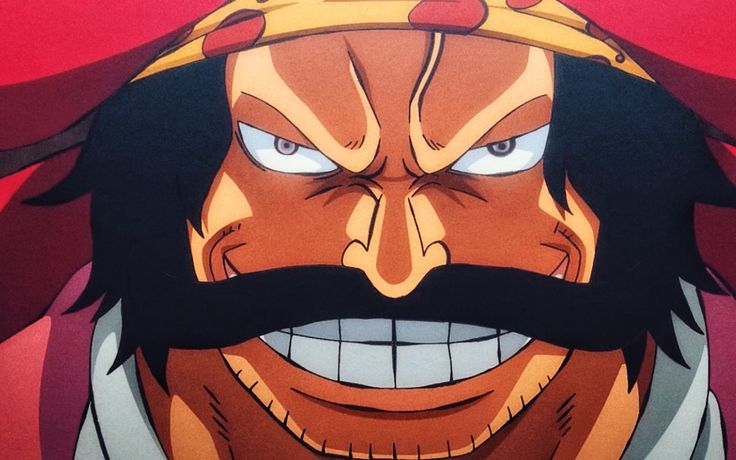
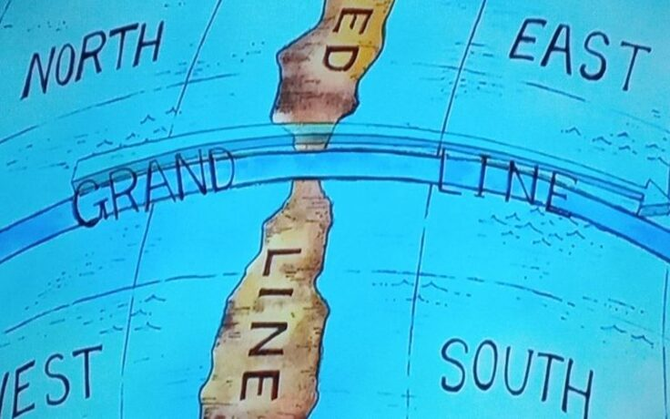
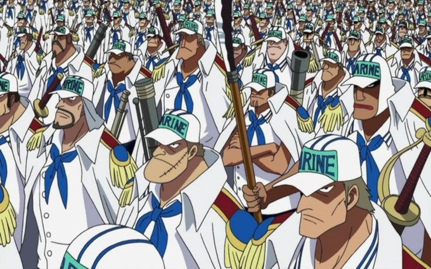
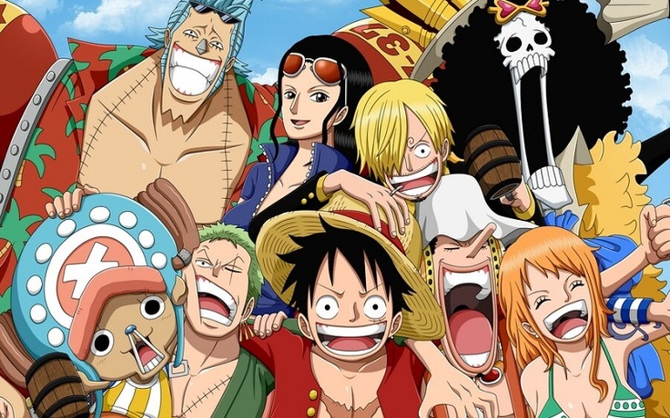

One Piece conta as aventuras de Monkey D. Luffy, um jovem cujo corpo ganhou as propriedades de borracha após ter comido uma fruta do diabo acidentalmente.
Com sua tripulação, os Piratas do Chapéu de Palha, Luffy explora a Grand Line em busca do tesouro mais procurado do mundo, o "One Piece", a fim de se tornar o próximo Rei dos Piratas.

"- Querem os meus tesouros e riquezas? Se quiserem, podem pegar... Ele será de quem conseguir encontrá-lo. Reuni tudo o que há de mais valioso nesse mundo e escondi naquele lugar...".
Essas foram as ultimas palavras de Gol D. Roger, o famoso Rei dos Piratas do mangá One Piece (escrito por Eichiro Oda) que foi executado no mar mais fraco, o East Blue na praça de execução de Longuetown.
Depois dessas palavras, o mundo virou de cabeça para baixo. A grande Era dos Piratas começou, onde todos cobiçavam o grande tesouro deixado por Roger... o One Piece. Várias pessoas, de todos os mares (North Blue, West Blue, South Blue e East Blue)
começaram a formar tripulações e partir para a Grand Line, conhecido por uns como "mar amaldiçoado" e por outros como "paraíso". Não importa o quê... neste mar tudo é imprevisível, mas uma coisa é certa: nele você encontrará muitas aventuras, sendo
que até mesmo uma Ilha no Céu poderá encontrar ou quem sabe monstros gigantes no mar.

A Grand Line nada mais é do que uma "Linha" que parte em todos os mares. Nela, há várias ilhas que sempre indicam a um unico ponto. É sempre importante cada tripulação ter um Navegador e um Log Poser (é como uma bussola que sempre aponta para a proxima ilha). A outra parte da Grand Line,
é também conhecida como Novo Mundo sendo a ultima ilha conhecida como Laftel. Segundo muitos, foi lá que o grande Roger escondeu seu grande tesouro, por isso todos cobiçam chegar até lá. Mas lembre-se: absolutamente ninguém sabe o que de fato é o One Piece.
No Novo Mundo também, é o lar dos Yonkous (Quatro Imperadores) que são quatro piratas extremamente poderosos reconhecidos pelo mundo todo. Eles são os mais indicados à encontrar o One Piece e cada um tem um enorme poder militar.

Enquanto piratas procuram o One Piece, a Marinha (que se auto-intitula de "Justiça Absoluta") tenta capturá-los e prendê-los, sendo que ela os considera como bandidos que causam apenas mal ao mundo. Os piratas mais perigosos e famosos sempre tem uma grande recompensa em Belies
(unidade monetária no mangá). O dever da Marinha é manter a Lei e a Ordem no mundo e impor a vontade e o poder do Governo Mundial. Ou seja, eles são a força militar do Governo. A Marinha detém uma grande força militar, tendo em mãos a ajuda do Governo Mundial, que comanda a famosa
CP9 (Cipher Pol 9), os Shichibukais, que nada mais são do que sete piratas subordinados do Governo, os Almirantes que são três marinheiros extremamente poderosos que comandam a Marinha, além dos três
pilares: Marineford (quartel general da Marinha, onde vive os almirantes e os marinheiros e onde também ocorreu a guerra de Marineford, onde teve a participação do ex yonkou Barba Branca), Impel Down (prisão submersa no mar da Marinha, onde estão os mais perigosos criminosos) e Enies Lobby.

Em One Piece, aventura não falta. É um mundo imenso, com vários tipos de personagens, personalidades, ilhas fantásticas, tripulações, vilões, akumas... Fora o grande humor dado pelos protagonistas da série: os Mugiwaras. A história principal envolve uma tripulação, comandada por um garoto
chamado Monkey D. Luffy, filho do grande revolucionário Monkey D. Dragon e neto de Monkey D. Garp, um famoso Marinheiro conhecido por encurralar Roger várias vezes. Luffy, ainda criança, recebe um chapéu de palha do atual yonkou Shanks na qual diz as palavras: "Me devolva esse chapéu, quando
você se tornar um grande pirata", dando uma grande referencia ao garoto, que gosta apenas de liberdade e aventura, cobiçando sempre o titulo de Rei dos Piratas e o tesouro One Piece. Luffy, assim quando completa 17 anos, parte de ilha em ilha rumo à Grand Line, sempre em busca de novos nakamas
(companheiros) para sua tripulação... São eles: Zoro, Nami, Usopp, Sanji, Robin, Chopper, Franky e Brook. Cada um dos nove, tem um sonho de vida e uma história de vida emocionante, mas sempre compartilhando os mesmo sentimentos como uma grande família. Emoção, aventura, ação, humor, suspense, mistério...
Tudo isso é garantido em One Piece. Acompanhe a história!